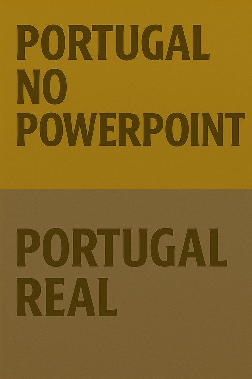

Publicado em 2025-05-28 08:32:00
A crítica de Matthew Prince, CEO da Cloudflare, não é apenas um desabafo — é um diagnóstico brutal, mas tristemente realista.
Portugal tem imenso potencial: qualidade de vida, segurança, clima, talento qualificado.
Mas o sistema está feito para asfixiar quem quer construir, inovar ou investir a sério. E um empresário que se move no tempo da nuvem digital bate contra a parede de cimento armado da burocracia lusitana.
O “país das oportunidades” só o é no PowerPoint dos ministérios.
Na prática, quem tenta investir esbarra em:
Atrasado não tecnicamente, mas mentalmente.
Os processos não foram desenhados para facilitar, mas para filtrar, adiar, mandar calar.
“Portugal promete muito… e entrega muito, muito pouco.”
Essa frase podia ser o epitáfio do regime atual.
Políticos vendem Portugal como se fosse Silicon Valley com vista para o Atlântico —
mas entregam balcões fechados, plataformas online que não funcionam, e um Estado que exige tudo e oferece pouco.
Por Francisco Gonçalves in Fragmentos de Caos